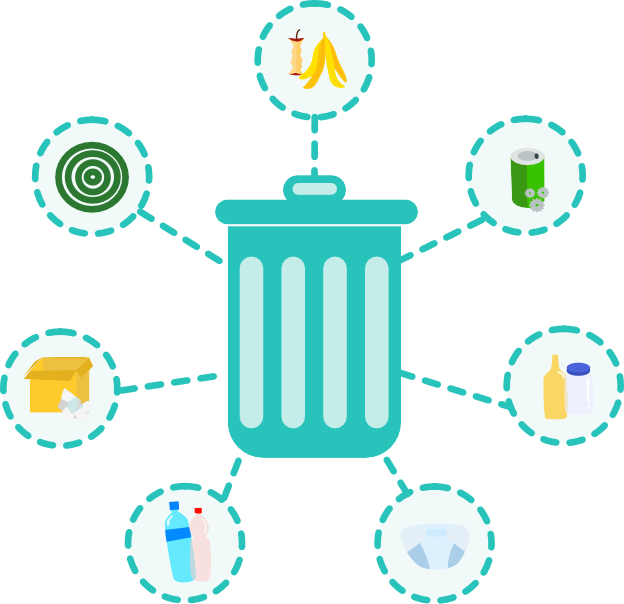
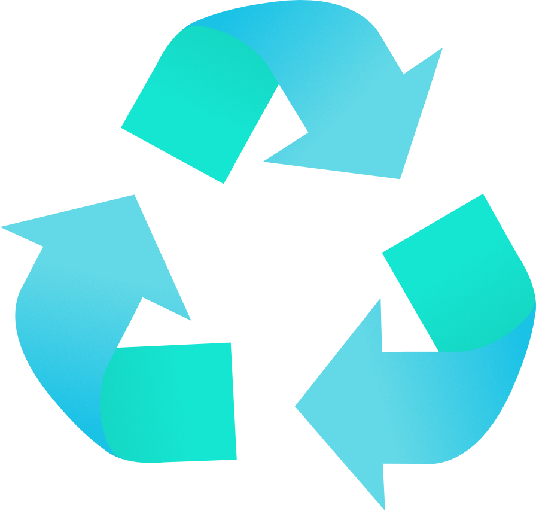

Layanan

Penyortiran Sampah

Daur Ulang Sampah

Jemput Sampah ke Lokasi Anda
Ayo daur ulang sampah untuk kehidupan yang lebih baik
Penyortiran Sampah
Daur Ulang Sampah
Jemput Sampah ke Lokasi Anda
Daur ulang adalah proses pengumpulan dan pengolahan bahan yang seharusnya dibuang sebagai sampah dan mengubahnya menjadi produk baru yang bermanfaat.
Indonesia diperkirakan menghasilkan 64 juta ton sampah setiap tahun. Berdasarkan data Kementerian Lingkungan Hidup dan Kehutanan (KLHK) tahun 2017 terdapat :
Sampah inilah yang dijadikan bahan pupuk kompos seperti daun-daunan, bekas sayuran, dll.
Seperti plastik bekas, gelas bekas air mineral kemasan jenis plastik dll.
Seperti sampah beling, kaca, gelas beling, bekas detergen, obat nyamuk dll.
Tempat sampah ini hanya boleh di isi sampah-sampah selain 4 jenis sampah tadi.